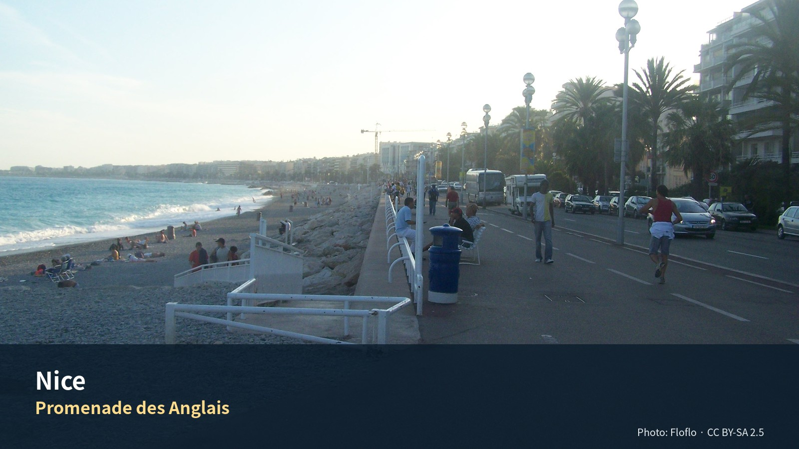

전체 목차
- 06. 니스와 코트다쥐르 5박 6일
- 지중해 생활도시, 칸과 모나코, 시장과 해안풍경
- 지역소개
- Editor’s Verdict
- 지역을 이해하는 다섯 개의 층
- 11. 니스와 코트다쥐르를 어떻게 볼 것인가
- 편집자 큐레이션 — 코트다쥐르의 도시들을 서로 비교하는 법
- 일정
- 1. 한눈에 보는 실행 요약
- 3. 날짜별 확정 일정
- Day 7 · 9월 4일 금
- Day 8 · 9월 5일 토
- Day 9 · 9월 6일 일
- Day 10 · 9월 7일 월
- Day 11 · 9월 8일 화
- Day 12 · 9월 9일 수
- 10. 피로도와 삭제 우선순위
- 여행정보
- 놓치면 아쉬운 선택
- 하루를 완성하는 네 가지 선택
- 이 지역의 Top 10
- 일정에 포함된 장소별 상세 가이드
- 실행지도 · 현장 사용
- 13. 추천등급 요약
- 14. 주요 방문지 상세 소개
- 19. 2026 행사·특별전과 이번 일정에서의 다루는 방식
- 먹거리
- 16. 레스토랑·카페·먹어야 할 것
- 17. 시장·슈퍼·제철 과일·햄·치즈·빵
- 교통
- 21. 렌터카·철도·주차 핵심 실무
- 숙박
- 12. 동네와 숙소 생활권
- 15. 숙소 전략
- 예약
- 22. 예약카드
- 경비
- 경비 참고처
- 여행팁
- 현장 메모
- 18. Jason 운동 · Julia 선택 수영
- 20. 우천·지연·피로 대체안
- 23. 출발 전 확인목록
- 부록
- Phase 10 공식정보 원칙
- 2. 시각요소 자리표시자
- 24. 공식자료와 참고 출처 범주

Promenade des Anglais — Photo: Floflo, CC BY-SA 2.5; 원문. 가이드북용으로 크롭·리사이즈.
{kind=link}
06. 니스와 코트다쥐르 5박 6일
지중해 생활도시, 칸과 모나코, 시장과 해안풍경
이번 개정의 핵심: Nice 체류를 4박에서 5박으로 늘리고 Aix를 4박으로 줄였다. 기본안은 Nice 자체 탐방 + Cannes + Monaco + Nice 생활·회복일이다. 추가된 9월 8일은 Libération 시장, Cimiez와 Matisse·Chagall 중 한 곳, 세탁·휴식·해변산책을 조합하는 완충일로 사용한다. Saint-Paul-de-Vence·Grasse·Aix 이동은 9월 9일로 하루 늦춘다.
식사 원칙: 아침은 숙소, 점심은 샌드위치·시장·가벼운 현지식, 저녁은 레스토랑을 기본으로 한다.
운동 원칙: Jason은 러닝 또는 짧은 gym, Julia의 수영은 선택 일정이며 숙소 선택조건이 아니다.
디자인 메모: 최종 가이드북에는 지도·사진·그림 이미지를 삽입한다. 현재 작업본에는 삽입 위치와 제목, 설명만 자리표시자 형태로 배치한다.
지역소개
시장과 해변의 생활도시를 중심으로 Cannes와 Monaco를 분리해 보는 5박
Riviera의 화려함보다 Nice의 생활감과 회복일을 중심에 둔 장
Editor’s Verdict
| 항목 | 평가 |
|---|---|
| 여행 적합도 | ★★★★★ Jason·Julia의 생활형 여행에 최적화 |
| 예산 체감 | 중상 |
| 일정 강도 | 당일치기 2회 + 회복일 |
| 예약 핵심 | TER 유연 · NCE 렌터카 P0 |
| 우천 전환 | Nice 미술관 1곳과 시장·카페 중심 |
지역을 이해하는 다섯 개의 층
역사
그리스 식민도시 Nikaia, 사보이아 지배, 1860년 프랑스 편입, 19세기 겨울휴양지의 역사가 겹친다.
경제
관광·컨벤션·서비스업과 Sophia Antipolis 기술권의 영향이 결합된 Riviera 중심도시다.
사회
프랑스 도시이지만 이탈리아·리구리아 문화의 흔적이 음식·건축·언어에 강하다.
문화
시장, 해변산책, Belle Époque 호텔, 현대미술관이 ‘휴양도시’ 이상의 층을 만든다.
이번 여행에서의 의미
Cannes와 Monaco를 분리하고 9/8 회복일을 지키는 것이 Nice 5박의 핵심이다.
11. 니스와 코트다쥐르를 어떻게 볼 것인가
이번 5박은 니스를 “휴양지”로만 소비하지 않고, 서로 다른 해안도시를 비교하는 짧은 입문 코스로 보는 편이 좋다.
- Nice: 시장, 구시가지, 산책과 장보기의 생활도시
- Cannes: 영화제와 해변 리조트, 상업적 해안도시
- Monaco: 왕정 구시가지와 초고가 현대도시가 맞붙는 도시국가
- Saint-Paul-de-Vence: 언덕 위 석조마을
- Grasse: 향수 산업과 구시가지가 결합한 내륙 언덕도시
이 구조는 Jason·Julia가 이후에 가게 될 Aix, Luberon, Avignon과도 잘 이어진다. 즉, 니스 챕터는 단순한 해변 휴양이 아니라, 프랑스 남동부의 도시·마을 성격을 빠르게 읽는 첫 단계다.
편집자 큐레이션 — 코트다쥐르의 도시들을 서로 비교하는 법
Nice·Cannes·Monaco는 모두 지중해 해안에 있지만 같은 도시가 아니다. 이번 챕터는 명소를 늘리는 대신 생활도시–리조트도시–도시국가의 차이를 체험하도록 설계한다.
코트다쥐르에서 꼭 기억할 세 장면
- Cours Saleya가 막 활기를 띠는 오전: 관광객용 시장이 되기 전 채소·꽃·치즈의 생활감
- Le Suquet에서 내려다본 Cannes: 오래된 언덕마을과 Croisette의 리조트 축이 한눈에 겹치는 풍경
- Monaco-Ville에서 Monte Carlo로 이동하는 순간: 왕실 구시가지와 금융·럭셔리 신도시의 극적인 전환
방문지 관람 포인트 보강
Promenade des Anglais — 바다를 ‘보는’ 길이 아니라 도시가 바다를 사용하는 방식
아침에는 러너와 통근자, 낮에는 해변 이용객, 저녁에는 산책객이 섞인다. Jason은 한 번은 운동공간으로, Julia와 함께는 일몰 산책공간으로 두 번 다르게 이용해보는 것이 좋다.
Cannes — 화려함을 비판하기 전에 오래된 도시를 먼저 본다
Forville 시장과 Le Suquet를 먼저 본 뒤 Croisette로 내려가야 Cannes가 단순한 명품거리로 끝나지 않는다. 오래된 어촌 언덕에서 시작해 영화제·호텔 파사드로 이동하면 도시의 변신이 분명해진다.
Monaco — ‘카지노 구경’보다 수직도시의 이동 자체가 체험
엘리베이터·터널·경사로·에스컬레이터가 여러 층의 도시를 연결한다. 이동수단을 단순한 편의시설이 아니라 제한된 영토 안에서 도시가 자란 방식으로 관찰한다.
Saint-Paul-de-Vence — 유명 갤러리보다 돌과 전망에 집중
상점이 많아도 모든 갤러리를 들르지 않는다. 성문, 골목의 경사, 돌벽의 질감, 성벽 끝 전망을 중심으로 60–90분 순환한다. Jason은 15분짜리 선 스케치 한 장만 남겨도 충분하다.
Grasse — 향수를 ‘사는 곳’보다 후각으로 도시를 기억하는 곳
짧은 방문이라도 세 가지 향 계열을 비교해본다. citrus, floral, woody 계열 중 각자 선호를 말해보고 작은 샘플이나 비누 정도만 구매한다. 향수공장 투어가 길어지면 Aix 도착시간을 우선한다.
식당 소개 보강
Acchiardo — 가족식당의 활기 속에서 니스 전통요리 입문
petits farcis와 ravioli à la daube를 공유하면 니스 음식이 채소와 오래 익힌 고기를 어떻게 결합하는지 알 수 있다. 구시가지 중심에서 식사하되, 저녁 후 귀가동선을 미리 확인한다.
La Table Alziari — 올리브오일과 지역 채소를 중심으로 보는 한 끼
지역요리는 무거운 고기만이 아니다. pissaladière·채소·제철 생선을 섞어 주문하면 장기여행 중 부담이 적다. 조용한 저녁을 원할 때 Acchiardo보다 적합하다.
La Mérenda — 작은 공간과 고정적인 지역요리의 집중경험
좌석과 예약방식이 독특할 수 있으므로, 유명세만 보고 선택하지 않는다. 당일 컨디션이 좋고 지역요리를 진하게 경험하고 싶을 때 한 번만 선택한다.
Café de Turin — ‘해산물 플래터’의 크기를 통제하는 것이 핵심
굴·새우·조개를 조금씩 고르고 fish soup 또는 샐러드를 더한다. 사진을 위한 대형 platter보다 먹을 수 있는 양을 먼저 말하는 것이 좋다.
Chez Pipo — socca를 한 끼가 아니라 도시의 간식으로
socca·pissaladière·tourte de blettes를 나눠 맛보는 가벼운 첫날 식사에 적합하다. 병아리콩전의 바삭한 가장자리와 부드러운 중앙을 뜨거울 때 먹는다.
코트다쥐르 체험 체크리스트
- [ ] Nice 시장에서 무화과·포도·올리브 중 2가지를 구입
- [ ] Castle Hill에서 해변 방향과 항구 방향을 모두 봄
- [ ] Cannes에서 시장–언덕–해변의 세 도시층을 순서대로 걸음
- [ ] Monaco의 공공 엘리베이터·수직동선을 한 번 이용
- [ ] Grasse에서 선호 향 계열을 서로 비교
- [ ] 미술관을 넣는 경우 하루 1곳만 선택
현장 선택 규칙
- 날씨가 가장 좋은 날: Monaco
- 구름이 많거나 바람이 있는 날: Cannes
- 비가 오는 날: Nice 미술관 또는 Grasse 실내체험
- 피로가 누적되면: Monaco의 Larvotto 또는 Cannes 쇼핑구간 삭제
- 한 번의 특별식: La Mérenda 또는 Café de Turin 중 하나
일정
1. 한눈에 보는 실행 요약
| 항목 | 권장 내용 |
|---|---|
| 체류 | 2026년 9월 4일 금요일 체크인 → 9월 9일 수요일 체크아웃, 5박 |
| 여행 성격 | 지중해 생활도시 + 당일치기 2회 + 생활·회복 1일 + 이동일 언덕마을·향수도시 |
| 이번 챕터의 우선순위 | Nice 시내 1일, Cannes 1일, Monaco 1일, Nice 생활·회복 1일, 9/9 Saint-Paul-de-Vence·Grasse 경유 후 Aix 이동 |
| 미술관 전략 | 9/8에 Matisse 또는 Chagall 한 곳만 선택. 우천 시 두 번째 실내모듈을 검토 |
| 숙소 1순위권 | Place Masséna 북동, Jean Médecin 동쪽, Garibaldi–Port 서쪽 |
| 숙박예산 | 2인 5박 총액 €700–1,000 내외를 계획범위로 사용. 주방·세탁·조용한 방향이 명확하면 상단 허용 |
| 필수 경험 | Cours Saleya, Vieux Nice, Castle Hill, Cannes Forville·Le Suquet, Monaco-Ville·Palace Square, 9/8 생활형 시장·완충시간 |
| 선택 경험 | Matisse 또는 Chagall, Cimiez 정원, Nice Port, Saint-Paul 골목 스케치, Grasse 향수 체험 |
| 운동 | Jason Promenade 5–8km 러닝 1–2회, Julia는 9/8 수영 선택 |
| 다음 이동 | 9/9 NCE Terminal 2 렌터카 인수 → Saint-Paul-de-Vence → Grasse → Aix-en-Provence |
| 피로도 | Nice 도시일 3 / Cannes·Monaco 4 / 9/8 회복일 2 / 이동일 5 |
이 일정이 Jason·Julia에게 맞는 이유
- Nice·Cannes·Monaco의 도시성 차이를 보면서도, 추가된 하루가 누적피로를 회수한다.
- 미술관을 강제하지 않고 시장·운동·세탁·한 곳의 문화시설을 선택하는 생활형 구조다.
- 렌터카 인수 전날 서류·짐·간식을 정리해 9/9 장거리 이동의 실패 가능성을 낮춘다.
3. 날짜별 확정 일정
| 날짜 | 테마 | 핵심 방문지 | 기본 성격 |
|---|---|---|---|
| 9/4 금 | 도착과 적응 | Place Masséna·Promenade des Anglais | 가벼운 산책 |
| 9/5 토 | Nice 핵심 도시일 | Cours Saleya·Vieux Nice·Castle Hill·Port 또는 해변 | 도시 이해 |
| 9/6 일 | Cannes 당일치기 | Marché Forville·Le Suquet·Vieux-Port·Croisette | 새로운 도시 경험 |
| 9/7 월 | Monaco 당일치기 | Monaco-Ville·Palace Square·Cathédrale·Monte Carlo | 도시국가 경험 |
| 9/8 화 | Nice 생활·회복일 | Libération 시장·Cimiez/Matisse 또는 Chagall·세탁·Promenade | 피로 회수 |
| 9/9 수 | Provence 이동일 | NCE 렌터카·Saint-Paul-de-Vence·Grasse·Aix | 이동 + 마을체험 |
Day 7 · 9월 4일 금
니스 도착, 체크인, Promenade 적응
| 상대시간 | 일정 | 실행 포인트 |
|---|---|---|
| 도착–+60분 | 공항 → 숙소 이동·체크인 | 도착터미널에 따라 Tram 2 또는 택시 |
| +60–+120분 | 짐 정리·근처 슈퍼 장보기 | 물, 요거트, 빵, 과일, 햄·치즈, 샐러드 |
| 일몰 전 45–60분 | Masséna·Jardin Albert 1er·Promenade | 방향만 익히고 장거리 도보는 피함 |
| 19:30 전후 | 가벼운 저녁 | 숙소권 캐주얼 식당 또는 숙소식 |
피로도 2/5. 지연 시 외식과 산책을 순서대로 삭제한다.
Day 8 · 9월 5일 토
Nice 핵심: 시장, 구시가지, 성채언덕, 해변
| 시간 | 일정 | 실행 포인트 |
|---|---|---|
| 07:20–08:05 | Jason 선택 러닝 | Promenade 5km 내외 |
| 09:20–10:20 | Cours Saleya | 과일·올리브·치즈·꽃시장 |
| 10:20–11:30 | Vieux Nice | Sainte-Réparate, 골목, 작은 광장 |
| 11:35–12:35 | Colline du Château | 해변·구시가지·항구 조망 |
| 12:45–13:30 | 가벼운 점심 | socca·salade niçoise·pan bagnat 중 1개 |
| 13:30–16:00 | Promenade 또는 Port·카페 | 폭염이면 숙소휴식 |
| 16:30–18:00 | 선택 | Port 또는 Garibaldi 중 1개 |
| 19:30–21:00 | 전통 Nice 저녁 | Acchiardo 또는 La Table Alziari |
피로도 3/5. 필수는 Cours Saleya·Vieux Nice·Castle Hill이다.
Day 9 · 9월 6일 일
Cannes 당일치기: 시장, 구시가지, 항구, Croisette
| 시간 | 일정 | 실행 포인트 |
|---|---|---|
| 08:40 전후 | Nice-Ville → Cannes TER | 당일 운행 재확인 |
| 09:30–10:20 | Marché Forville | 생활시장·간식 |
| 10:20–11:20 | Le Suquet | 골목·전망 |
| 11:20–12:00 | Vieux-Port | 항구 보행 |
| 12:00–13:00 | 가벼운 점심 | 시장식 또는 간단한 해산물 |
| 13:00–15:40 | Palais·Croisette·해변 선택 | 쇼핑연장은 삭제 가능 |
| 16:00 전후 | Nice 귀환 | 저녁 전 숙소휴식 |
피로도 4/5. Forville·Le Suquet·Croisette를 핵심으로 두고 해변 체류를 조절한다.
Day 10 · 9월 7일 월
Monaco 당일치기: 왕실 구시가지, 항구, Monte Carlo
| 시간 | 일정 | 실행 포인트 |
|---|---|---|
| 09:00 전후 | Nice-Ville → Monaco TER | 역내 엘리베이터·출구 확인 |
| 10:15–12:30 | Monaco-Ville·Palace Square·Cathedral | 버스·엘리베이터 활용 |
| 12:40–13:30 | 가벼운 점심 | Old Town 또는 항구 |
| 13:40–14:40 | Port Hercule·Condamine | 도시단면 관찰 |
| 14:50–16:10 | Casino Square·Monte Carlo | 외관·정원 중심 |
| 16:10–17:00 | Japanese Garden 또는 Larvotto | 둘 중 하나만 |
| 17:20 전후 | Nice 귀환 | 저녁은 가볍게 |
피로도 4/5. Palace Square와 Monte Carlo가 핵심이다.
Day 11 · 9월 8일 화
Nice 생활·회복일: 시장, 한 곳의 문화시설, 세탁과 해변
추가된 1박의 목적은 장소를 더 쌓는 것이 아니라 당일치기 이틀 뒤 피로를 회수하고 Nice에서 실제 생활하는 것이다.
| 시간 | 일정 | 실행 포인트 |
|---|---|---|
| 07:30–08:15 | Jason 선택 러닝 또는 늦잠 | 다리 피로가 있으면 완전휴식 |
| 09:20–10:30 | Marché de la Libération | 실제 장보기·9/9 차량간식 준비 |
| 10:45–12:30 | Matisse Museum 또는 Chagall Museum | 한 곳만. Matisse 선택 시 Cimiez 정원 결합 |
| 12:45–13:30 | 가벼운 점심 | 시장재료 또는 숙소권 점심 |
| 13:30–15:30 | 숙소 휴식·세탁 | 체크아웃·렌터카 서류·짐 재분류 |
| 15:30–17:30 | 선택 모듈 | Promenade 카페, 해변산책, Julia 수영 중 1개 |
| 17:30–18:30 | 9/9 준비 | 물·간식·면허·예약번호·주유/보험 확인 |
| 19:30–21:00 | Nice 마지막 저녁 | 과식하지 않고 이동일 전 음주 최소화 |
피로도 2/5. 미술관 1곳과 생활블록만 유지하며, 두 번째 미술관·Èze·Villefranche 추가는 금지한다.
Day 12 · 9월 9일 수
렌터카 인수, Saint-Paul-de-Vence·Grasse, Aix 이동
| 시간 | 일정 | 실행 포인트 |
|---|---|---|
| 07:00–08:00 | 체크아웃·간단한 아침 | 차량용 물·간식 준비 |
| 08:15 전후 | NCE Terminal 2 렌터카 인수 | 자동변속·보험·편도반납·차체촬영 |
| 09:30–11:00 | Saint-Paul-de-Vence | 골목·성벽·짧은 스케치 |
| 11:00–12:00 | 가벼운 점심·이동 | 긴 코스식 금지 |
| 12:30–14:00 | Grasse vieille ville | 향수 시향 또는 짧은 공방 |
| 14:30–17:00 | Grasse → Aix | A8 정체에 따라 변동 |
| 17:00 이후 | Aix 체크인 | 다음 챕터의 Day 1로 연결 |
피로도 5/5. 인수가 늦으면 Grasse를 먼저 삭제하고, 정체가 심하면 Saint-Paul만 본다.
10. 피로도와 삭제 우선순위
| 날짜 | 피로도 | 삭제 1순위 | 삭제 2순위 |
|---|---|---|---|
| 9/4 | 2 | 외식 | Masséna 추가산책 |
| 9/5 | 3 | Port | 카페 2차 |
| 9/6 | 4 | Croisette 쇼핑 | 해변 연장 |
| 9/7 | 4 | Larvotto/Japanese Garden | Condamine 추가산책 |
| 9/8 | 2 | 두 번째 문화시설 | 추가 동네탐방 |
| 9/9 | 5 | Grasse | Saint-Paul 긴 점심 |
여행정보
주요 방문지
사진은 온라인 상태에서 Wikipedia로부터 불러옵니다.
오프라인입니다. Google Maps 링크와 방문지 사진은 연결되면 다시 동작합니다.
니스 구시가의 식품·꽃 시장 거리
천사의 만과 항구를 내려다보는 전망 언덕
칸·모나코행 TER이 출발하는 중앙역
영화제의 도시 — 르 쉬케 언덕과 크루아제트
왕궁과 몬테카를로의 도시국가
현지 생활형 아침시장 — 9/8 회복일의 장보기
9/9 렌터카 인수 지점 (Terminal 2)
놓치면 아쉬운 선택
| 등급 | 장소·경험 | 이 가이드북에서 추천하는 이유 |
|---|---|---|
| 필수 | Cours Saleya–Vieux Nice–Castle Hill | 시장·구시가지·전망을 한 날의 완성된 흐름으로 묶는다. |
| 우선 추천 | Promenade 생활산책 | 관광명소라기보다 매일 반복할 수 있는 운동·일몰 공간으로 쓴다. |
| 우선 추천 | Cannes 당일치기 | 시장·구시가지·Croisette를 짧고 명확하게 본다. |
| 우선 추천 | Monaco 당일치기 | 왕실 구시가지와 항구를 우선하고 Monte Carlo 추가는 체력에 따라 결정한다. |
| 필수 | 9/8 회복일 | 세탁·장보기·문화시설 한 곳만 배치해 Provence 차량구간을 준비한다. |
하루를 완성하는 네 가지 선택
| 시간·역할 | 추천 | 이용법 |
|---|---|---|
| 아침 | Libération 또는 Cours Saleya | 시장에 먼저 가고 해변은 이후에 본다. |
| 점심 | 시장·구시가지 가벼운 식사 | 해변 도시에서 긴 점심보다 오후 체력을 남긴다. |
| 저녁 | 숙소 생활권 또는 Port | 당일치기 귀환 후 이동을 최소화한다. |
| 운동 | Promenade 러닝·걷기 | 평탄하고 반복 가능한 Nice의 대표 생활경험이다. |
이 지역의 Top 10
- Cours Saleya
- Vieux Nice
- Castle Hill
- Promenade
- Libération 시장
- Port
- Cannes Forville
- Le Suquet
- Monaco-Ville
- 회복일 장보기
일정에 포함된 장소별 상세 가이드
1. Cours Saleya
왜 중요한가
꽃·식품시장과 구시가지의 생활축이 결합된 Nice의 대표 공간이다.
| 항목 | 실행정보 |
|---|---|
| 방문 방법 | 트램 Opéra–Vieille Ville 또는 숙소에서 도보. |
| 권장 관람법 | 시장만 보지 말고 광장–골목–해변 연결을 본다. |
| 권장 체류 | 60–90분 |
| 요금·예약 | 시장 무료. 요일별 품목·운영 확인. |
| 주의사항 | 월요일 골동품시장 등 요일 차이. |
| 공식정보 | https://www.explorenicecotedazur.com/ |
2. Colline du Château
왜 중요한가
성은 사라졌지만 Nice의 해안·항구·구시가지 지형을 가장 잘 보여주는 언덕이다.
| 항목 | 실행정보 |
|---|---|
| 방문 방법 | 도보계단 또는 엘리베이터. |
| 권장 관람법 | 전망대 2곳만 선택해 Baie des Anges와 Port를 비교한다. |
| 권장 체류 | 60–75분 |
| 요금·예약 | 무료. |
| 주의사항 | 엘리베이터 운영·강풍·한낮 더위. |
| 공식정보 | https://www.explorenicecotedazur.com/ |
3. Cannes Le Suquet·Croisette
왜 중요한가
중세 언덕과 영화제 해안대로가 대비되는 도시다.
| 항목 | 실행정보 |
|---|---|
| 방문 방법 | Nice-Ville에서 TER, Cannes역 도보. |
| 권장 관람법 | Forville–Le Suquet–항구–Croisette 순으로 내려간다. |
| 권장 체류 | 4–6시간 |
| 요금·예약 | 도시산책 무료. 개별시설 유료. |
| 주의사항 | 일요일 시장·열차시간 확인. |
| 공식정보 | https://www.cannes-france.com/ |
4. Monaco-Ville
왜 중요한가
왕궁·대성당·해양박물관이 모인 절벽 위 구시가지로 도시국가의 정치적 상징공간이다.
| 항목 | 실행정보 |
|---|---|
| 방문 방법 | TER Monaco-Monte-Carlo 후 버스 또는 도보상승. |
| 권장 관람법 | 왕궁광장–대성당–전망을 우선하고 Monte Carlo는 선택. |
| 권장 체류 | 4–6시간 |
| 요금·예약 | 구시가지 무료, 박물관·왕궁 유료. |
| 주의사항 | 경사·혼잡·정장규정 가능. |
| 공식정보 | https://www.visitmonaco.com/ |
5. Saint-Paul-de-Vence
왜 중요한가
중세 성벽마을이 20세기 예술가·갤러리촌으로 변한 Côte d’Azur 대표 언덕마을이다.
| 항목 | 실행정보 |
|---|---|
| 방문 방법 | NCE 렌터카 인수 후 외곽 공영주차. |
| 권장 관람법 | 성문–성벽–묘지–갤러리 골목을 90분 내 본다. |
| 권장 체류 | 75–100분 |
| 요금·예약 | 마을 무료, 주차 유료. |
| 주의사항 | 짐을 차량에 오래 노출하지 않는다. |
| 공식정보 | https://www.saint-pauldevence.com/ |
6. Grasse
왜 중요한가
가죽무두질에서 향수산업으로 전환한 세계적 향수도시다.
| 항목 | 실행정보 |
|---|---|
| 방문 방법 | Saint-Paul에서 차량 이동, 중심 공영주차. |
| 권장 관람법 | 향수박물관 하나보다 공방·원료·도시산업의 관계를 본다. |
| 권장 체류 | 90–150분 |
| 요금·예약 | 박물관·공방별 상이, 일부 무료 투어. |
| 주의사항 | Aix 체크인 지연 시 내부관람 삭제. |
| 공식정보 | https://www.paysdegrassetourisme.fr/ |
실행지도 · 현장 사용
- 대화형 HTML 지도
- GeoJSON
- KML
- 대상 일정: Day 7–12
- 숙소 핀은 현재 후보 위치이며 실제 예약주소가 아니다.
- 연결선은 일정상의 기준점 순서를 보여주는 개략선이다. 실제 도보·운전은 Google Maps에서 다시 계산한다.
- HTML 배경지도와 Google Maps 링크는 인터넷 연결이 필요하다.
13. 추천등급 요약
| 장소 | 등급 | 이유 |
|---|---|---|
| Cours Saleya | 필수 | 니스의 시장과 생활감이 가장 농축된 장소 |
| Vieux Nice | 필수 | 니스의 도시 성격을 직접 체감하는 구역 |
| Colline du Château | 필수 | 해변·항구·구시가지 전체를 한 번에 이해하는 전망대 |
| Cannes — Forville + Le Suquet + Croisette | 필수에 가까운 우선 추천 | Nice와 성격이 다른 해안도시 경험 |
| Monaco — Monaco-Ville + Monte Carlo | 필수에 가까운 우선 추천 | 도시국가의 밀도와 상징성이 강함 |
| Saint-Paul-de-Vence | 우선 추천 | 이동일에 넣기 좋은 대표 언덕마을 |
| Grasse vieille ville | 우선 추천 | 향수도시라는 뚜렷한 개성이 있음 |
| Port Lympia | 우선 추천 | Nice의 생활형 항구 분위기 |
| Marché de la Libération | 선택 | 생활감 있는 장보기에 좋음 |
| Matisse Museum | 선택 | 관심이 있거나 비 오는 날 대체안으로 좋음 |
| Chagall Museum | 선택 | 예술 관심이 강할 때만 추가 |
| Cannes 쇼핑 중심 장기체류 | 비추천 | 이번 일정에서는 도시 성격 체험만으로 충분 |
| Monaco 대형 실내명소 연속 방문 | 비추천 | 도시 자체를 보기보다 실내에 갇히게 됨 |
14. 주요 방문지 상세 소개
14.1 Cours Saleya — 니스를 시작하는 가장 좋은 장소
꽃과 식품 노점이 이어진 Cours Saleya
- 설명: 니스의 시장 문화와 구시가지 입구의 활기를 상징하는 이미지.
니스에서 “어디부터 시작할 것인가”를 묻는다면 답은 거의 항상 Cours Saleya다. 관광객도 많지만, 이곳은 여전히 니스가 먹고, 사고, 걷는 도시라는 사실을 보여준다.
왜 가야 하나 - 니스 특유의 식문화가 눈앞에 펼쳐진다. - Vieux Nice와 해변을 연결하는 출발점이다. - 점심 재료와 간단한 간식을 동시에 해결할 수 있다.
꼭 해볼 것 - 꽃시장과 식품시장을 모두 한 바퀴 돌아보기 - 제철 과일 1–2종 사보기 - socca 또는 pissaladière를 간식으로 맛보기 - 주변 골목으로 자연스럽게 이어서 Vieux Nice로 들어가기
체류 적정시간: 45–60분
14.2 Vieux Nice — 관광지가 아니라 “도시의 기억”으로 보기
Vieux Nice의 주황빛 건물과 좁은 골목
- 설명: 관광객이 많아도 여전히 니스의 역사적 중심이라는 느낌을 주는 장면.
Vieux Nice는 단지 “예쁜 골목”이 아니라, 현재의 니스가 생겨난 오래된 도심이다. 골목을 서둘러 통과하기보다, 광장과 성당, 아이스크림 가게, 작은 식당이 어떻게 엮여 있는지 보는 것이 중요하다.
꼭 해볼 것 - Sainte-Réparate 성당 주변 광장 머물기 - 골목 하나는 의도적으로 천천히 걸어보기 - 관광객이 몰리는 메인축을 벗어난 조용한 골목 1–2개 찾아보기
체류 적정시간: 60–75분
14.3 Colline du Château — 니스를 한 번에 이해하는 전망대
Castle Hill에서 내려다본 Baie des Anges
- 설명: 니스의 해변곡선과 구시가지, 항구를 동시에 담는 대표 전망 이미지.
이곳은 Nice 시내에서 가장 높은 상징적 전망 지점이다. 박물관 대신 도시 전체 구조를 한 번에 읽고 싶다면, 바로 이곳이 더 중요하다.
꼭 해볼 것 - 해변 방향 전망과 항구 방향 전망을 모두 보기 - 폭포 주변 그늘에서 잠깐 쉬기 - 내려올 때는 Port 쪽 또는 구시가지 쪽 중 한 방향을 선택해 동선을 마무리하기
체류 적정시간: 45–60분
14.4 Cannes — “영화제 도시”와 “리조트 도시”를 동시에 체험
Croisette의 야자수와 호텔 파사드
- 설명: 칸이 왜 지중해 리조트의 상징으로 소비되는지를 한눈에 보여주는 장면.
Cannes는 화려한 이미지 때문에 피상적으로 느껴질 수 있지만, Forville 시장과 Le Suquet를 같이 보면 훨씬 입체적으로 읽힌다. 즉, 칸은 시장과 언덕의 오래된 마을 + 영화제와 리조트의 현대 이미지가 공존하는 도시다.
꼭 해볼 것 - Forville 시장에서 치즈·과일·해산물 풍경 보기 - Le Suquet에서 칸 시가지와 항구 조망 - Croisette를 적어도 30분은 걸어보기 - Palais des Festivals 주변에서 영화제 도시의 분위기 체감하기
체류 적정시간: 5–6시간
추천 음식 포인트 - 시장 안 또는 근처에서 가벼운 점심 - 저녁은 Nice로 돌아와 먹는 편이 전체 리듬상 좋음
14.5 Monaco — 작지만 강한 도시국가
Monaco-Ville 성벽과 바다 전망
- 설명: 작은 면적 안에 군주국의 상징과 바다풍경이 겹치는 Monaco의 특징을 보여주는 장면.
Monaco는 작지만 하루를 꽉 채울 수 있다. Old Town, Palace, Cathedral, Port, Casino Square가 전부 성격이 다르기 때문이다.
꼭 해볼 것 - Monaco-Ville에서 골목·기념품가게·광장 사이를 천천히 걷기 - Palace Square에서 항구 쪽 조망 보기 - Casino Square까지 이동해 극적인 분위기 차이를 체감하기 - 시간이 남으면 Japanese Garden 또는 Larvotto로 내려가 생활형 해안축 보기
체류 적정시간: 6–7시간
14.6 Saint-Paul-de-Vence — 이동일에 가장 효율적인 언덕마을
Saint-Paul-de-Vence 성문과 석조 골목
- 설명: 남프랑스 언덕마을 이미지의 전형.
이곳은 너무 유명해서 오히려 과소평가되지만, 이동일에 짧고 강하게 보기엔 매우 좋다. 성벽마을의 구조가 명료하고, Jason의 짧은 스케치 포인트로도 훌륭하다.
꼭 해볼 것 - 성문을 지나 한 바퀴 도는 식으로 골목 순환하기 - 성벽 끝 전망 포인트 하나는 꼭 보기 - 상점 구경보다 골목과 건물 재료, 풍경에 집중하기
체류 적정시간: 60–90분
14.7 Grasse — 향수도시를 “박물관”보다 “체험”으로 보기
향수 체험 테이블 또는 향수 بوتीक 디스플레이
- 설명: Grasse를 단순한 구시가지가 아니라 향수산업의 도시로 인식하게 만드는 장면.
Grasse는 박물관을 깊게 보지 않아도 좋다. 구시가지와 향수 관련 boutique 또는 짧은 체험만으로도 도시 정체성이 분명하게 느껴진다.
꼭 해볼 것 - vieille ville 골목 30–40분 걷기 - 향수 boutique 또는 공방에서 시향 체험하기 - 너무 길게 머무르지 말고 Aix 이동의 리듬을 지키기
체류 적정시간: 60–90분
14.8 미술관·박물관은 어떻게 다룰까
Jason·Julia의 선호를 반영해 이번 챕터에서 미술관은 기본안에서 후순위로 내린다. 다만 다음과 같은 상황이면 넣을 가치가 있다.
- 비가 와서 야외 산책 가치가 떨어질 때
- Monaco 또는 Cannes 대신 좀 더 조용한 하루가 필요할 때
- Matisse 또는 Chagall에 대한 관심이 일정 전체에서 특별히 클 때
우선순위 1. Matisse Museum 2. Chagall Museum 3. Monaco Oceanographic Museum
19. 2026 행사·특별전과 이번 일정에서의 다루는 방식
이번 개정에서는 행사와 전시는 보조정보로 둔다.
- Matisse 관련 특별전이 체류기간과 겹치더라도, 이번 기본 일정은 도시·마을 체험 우선
- Chagall 특별대여전도 흥미롭지만, 우선순위는 Nice·Cannes·Monaco보다 낮게 둔다
- 9/8에 Matisse 또는 Chagall 한 곳을 기본 선택하며, 우천 시 같은 날 실내비중을 늘린다
먹거리
16. 레스토랑·카페·먹어야 할 것
petits farcis 또는 socca 한 접시
- 설명: 니스에서 꼭 먹어볼 전형적인 지역음식을 보여주는 이미지.
16.1 저녁식당 추천
| 식당 | 성격 | 꼭 먹을 것 | 1인 예산 | 예약 |
|---|---|---|---|---|
| Acchiardo | Vieux Nice 전통요리 | petits farcis, ravioli à la daube, daube niçoise | €30–50 | 권장 |
| La Table Alziari | 지역식·올리브오일 가문 | farcis, 제철 생선, pissaladière | €35–55 | 권장 |
| La Mérenda | 작은 전통식당 | daube, pâtes au pistou, 지역식 일품요리 | €40–60 | 예약 강권 |
| Café de Turin | Garibaldi 해산물 | 굴, 새우, fish soup, seafood platter | €30–70 | 저녁 권장 |
| Chez Pipo | Port 인근 socca 전문 | socca, pissaladière, tourte de blettes | €10–25 | 보통 불필요 |
| D’Aqui | 테이크아웃·가벼운 점심 | pan bagnat, barbajuan, panisse | €10–20 | 불필요 |
16.2 Cannes 점심 후보
| 식당/형태 | 추천 이유 | 추천 |
|---|---|---|
| Marché Forville 안팎 간단 식사 | 시장 동선과 가장 자연스럽게 연결 | 1순위 |
| 항구 주변 해산물 비스트로 | 도시 분위기 체험 가능 | 2순위 |
| Croisette 카페 | 바다 풍경은 좋으나 가격이 높음 | 선택 |
16.3 Monaco 점심 후보
| 식당/형태 | 추천 이유 | 추천 |
|---|---|---|
| Monaco-Ville 샌드위치·샐러드 | 동선 효율이 좋음 | 1순위 |
| Port Hercule 주변 캐주얼 레스토랑 | 전망과 휴식 | 2순위 |
| Monte Carlo 호텔 레스토랑 | 분위기는 좋으나 과도한 지출 가능 | 특별한 날만 |
꼭 먹어볼 것 리스트
- socca: 병아리콩 전. 니스 대표 간식
- salade niçoise: 가벼운 점심용
- pan bagnat: 이동일과 당일치기 점심에 최적
- pissaladière: 양파와 멸치가 들어간 지역식 타르트
- petits farcis: 니스 저녁식사의 대표 메뉴
- daube niçoise: 느긋한 저녁에 좋은 전통 스튜
- tourte de blettes: 근대 잎을 쓴 디저트 또는 간식
17. 시장·슈퍼·제철 과일·햄·치즈·빵
Libération 시장의 생활형 장보기 풍경
- 설명: 관광지 시장과 다른, 니스 주민의 일상 장보기 장면을 보여주는 이미지.
17.1 시장
| 시장 | 역할 | 추천 방문시점 |
|---|---|---|
| Cours Saleya | 관광 + 식문화 + 사진 | 9/5 오전 |
| Marché de la Libération | 실제 장보기, 생활형 시장 | 9/8 오전 |
| Marché Forville | Cannes의 대표 시장 | 9/6 오전 |
17.2 숙소에서 사둘 것
- 물, 요거트, 샐러드채소
- 햄·치즈, 작은 바게트 또는 fougasse
- 무화과, 포도, 복숭아, 자두
- 올리브 또는 tapenade
- 이동일용 견과류와 과일
17.3 제철 과일과 지역 식재료
| 품목 | 비고 |
|---|---|
| 무화과 | 9월 초 대표 과일 |
| 포도 | 아침·간식 모두 좋음 |
| 복숭아·자두 | 과숙 주의, 소량 구매 |
| chèvre | 샌드위치와 아침에 활용 |
| jambon cru | 점심용 샌드위치 |
| 올리브·tapenade | 숙소 간단한 aperitif 느낌 |
교통
21. 렌터카·철도·주차 핵심 실무
21.1 Nice ↔ Cannes / Monaco
- 기본은 TER 열차
- Nice-Ville 기준 Cannes 약 35–40분, Monaco 약 25분 전후
- 장기여행 큰 짐은 숙소에 두고 소형 가방만 휴대
21.2 9/9 렌터카 인수
- 시내보다 NCE Terminal 2 인수 우선
- 이유: 시내 진입 스트레스 감소, A8 진입 용이, 다음 거점 연결이 자연스러움
21.3 Saint-Paul-de-Vence 주차
- 관리형 유료주차장 사용을 기본으로 한다.
- 장기여행 짐은 외부에서 보이지 않게 둔다.
21.4 Grasse 주차
- vieille ville 외곽 공영주차장을 사용하고, 짧게 도보 진입하는 방식이 안전하다.
숙박
12. 동네와 숙소 생활권
| 생활권 | 성격 | 장점 | 약점 | 추천 |
|---|---|---|---|---|
| Place Masséna 북동 | 중심·도보형 | 바다·구시가지·트램·쇼핑의 균형 최고 | 가격이 약간 높음 | 1순위 |
| Jean Médecin 동쪽 | 교통·상점 중심 | Nice-Ville, 트램, 슈퍼 접근 우수 | 대로변 소음 가능 | 1순위 |
| Garibaldi–Port 서쪽 | 식당·항구·트램 | Vieux Nice와 Port 사이, 저녁산책 좋음 | 역 접근은 한 단계 떨어짐 | 1.5순위 |
| Libération | 생활시장형 | 시장·트램·현지감 | 바다·구시가지까지 이동 필요 | 2순위 |
| Promenade 서쪽 | 해변형 | 바다 접근과 러닝 최적 | 철도·시장 동선이 길어짐 | 2순위 |
| Vieux Nice 내부 | 관광 중심 | 분위기는 좋음 | 야간소음, 계단, 짐 이동 불리 | 비추천 |
Jason·Julia에게 가장 적합한 이유
이번 일정은 Nice 자체보다 Cannes·Monaco 철도 이동이 핵심이므로, Nice-Ville 접근성과 저녁 산책의 균형이 중요하다. 따라서 Place Masséna 북동 또는 Jean Médecin 동쪽이 가장 무난하다.
15. 숙소 전략
15.1 숙소 선택 기준
- Nice-Ville 또는 Masséna 방면 접근성이 좋을 것
- 도보 5–10분 안에 슈퍼와 빵집이 있을 것
- 5박이므로 주방 또는 kitchenette·세탁 접근이 있으면 가점
- 엘리베이터와 조용한 객실 여부 확인
- 9/9 이른 체크아웃과 NCE T2 이동이 어렵지 않을 것
15.2 실제 숙소 후보
아래 평가는 기존 v1.0 기준의 1차 적합도다. 실시간 재고와 총액은 예약 시점에 공식 채널에서 다시 확인한다.
| 후보 | 생활권·형태 | 장점 | 확인사항 | 적합도 |
|---|---|---|---|---|
| AMMI Nice Massena | Place Masséna, 아파트호텔 | 중심성, 주방, 해변·구시가지 접근 우수 | 객실까지 계단 유무 확인 | 91/100 |
| Adagio Access Nice Garibaldi | Garibaldi 동쪽, 아파트호텔 | 주방, 트램, 구시가지 접근, 생활형 체류 적합 | 역 접근은 한 단계 멂 | 88/100 |
| AMMI Nice Lafayette | Masséna 북동, 아파트호텔 | 위치 탁월, 간단한 조리 가능 | 1층까지 30계단 안내 확인 | 86/100 |
| Best Western Lakmi Nice | Jean Médecin, 호텔 | 역·트램·쇼핑 접근 안정적 | 주방 없음, 대로변 소음 가능 | 84/100 |
| Residhome Nice Promenade | Promenade 서쪽, 아파트호텔 | 주방, 해변·러닝 우수 | 시장·역 이동이 길어짐 | 82/100 |
| Best Western Alba | Jean Médecin 북부, 호텔 | 교통 편리, 무난한 호텔형 | 주방 없음 | 81/100 |
| Adagio Nice Centre | Port 북동, 아파트호텔 | 주방, 비교적 넓은 객실 | 중심축에서 약간 벗어남 | 80/100 |
| Hôtel du Midi | Nice-Ville 남서, 호텔 | 예산형 가능성, 역 접근 우수 | 구시가지와 해변까지 추가 이동 | 79/100 |
15.3 최종 선택 순서
- AMMI Nice Massena — 총액이 허용 범위면 1순위
- Adagio Access Nice Garibaldi — 생활형·주방형 대안
- Lakmi / Alba — 주방보다 교통과 가격을 우선할 때
- Residhome Nice Promenade — 해변과 러닝을 우선할 때
예약
22. 예약카드
22.1 출발 전 예약 우선순위
| 항목 | 우선순위 | 비고 |
|---|---|---|
| Nice 숙소 | 매우 높음 | 위치·계단·에어컨·주방 확인 |
| 9/9 렌터카 | 매우 높음 | 차종, 자동변속기, 편도반납, 보험 확인 |
| Nice 첫 저녁 또는 마지막 저녁 | 중간 | La Mérenda는 조기 예약 권장 |
| Cannes·Monaco 열차 | 낮음 | 보통 현장 또는 앱 구매 가능 |
| Saint-Paul/Grasse 식당 | 낮음 | 이동일이라 현장 탄력 운영 |
22.2 현장 직전 재확인
- TER 운행상태와 파업 여부
- Cours Saleya와 Forville 운영일
- 날씨, 폭염, 우천 예보
- 렌터카 인수시간과 필요 서류
- 숙소 체크아웃 시간과 짐 보관 가능 여부
경비
경비 참고처
이 지역 챕터의 소스에는 아직 별도 경비 정리가 없다. 다음을 참고한다.
여행팁
현장 메모
- 대표 촬영 장면: Promenade의 곡선과 지중해의 파란 수평선
- 기념품 방향: 올리브·향신료·지역 비누·시장 식재료
- 일정 삭제 원칙: 선택 쇼핑·두 번째 카페·추가 내부관람부터 삭제하고 핵심 예약과 귀환 연결은 유지한다.
- 표시 기준: 별점은 객관적 품질평가가 아니라 이 여행계획에서의 편집 추천도다.
18. Jason 운동 · Julia 선택 수영
18.1 Jason 러닝
기본 코스: Place Masséna/Jean Médecin 숙소권 → Jardin Albert 1er → Promenade des Anglais 서쪽 → 회차 → 숙소
- 거리: 5–8km 조절 가능
- 가장 좋은 날: 9/5 아침 또는 9/8 회복일 아침
- 주의: 자전거도로와 보행자 흐름 구분
18.2 Jason gym 선택
- Jean Bouin 복합시설을 1회성 선택지로 둔다.
- 다만 이번 챕터는 도시당일치기 2회가 있으므로 러닝 우선이 더 현실적이다.
18.3 Julia 수영 선택
- Jean Bouin 수영장이 가장 현실적인 선택지
- 장거리 당일치기를 하는 이번 일정에서는 수영을 “필수 루틴”으로 넣지 않는다.
- 넣는다면 9/8 오후에 배치
20. 우천·지연·피로 대체안
20.1 9/5 Nice 도시일 대체안
- 비: Cours Saleya 짧게 → Matisse 또는 Chagall → 실내 점심 → Masséna 산책 축소
- 폭염: Castle Hill 시간을 줄이고 Port 대신 숙소 휴식
- 피로: Libération 또는 Port 삭제
20.2 9/6 Cannes 대체안
- 강풍·비: Cannes 전체 취소 후 Nice 미술관일로 교체
- 열차 지연: Forville 또는 Croisette 중 하나만 선택
- 더 걷기 싫음: Le Suquet만 보고 조기 귀환
20.3 9/7 Monaco 대체안
- 비: Old Town 축소 + Oceanographic Museum 또는 Nice 미술관 전환
- 피로: Monte Carlo까지만 보고 Larvotto 생략
- 철도문제: Nice Port·Garibaldi·Libération으로 대체
20.4 9/8 생활·회복일 대체안
- 비: Libération 짧게 → Matisse 또는 Chagall → 숙소 휴식
- 피로: 시장·미술관 중 하나만 유지
- 맑고 컨디션 좋음: Promenade 또는 Cimiez 산책 60분 추가
20.5 9/9 이동일 대체안
- 렌터카 지연: Saint-Paul만 보고 Aix 직행
- 폭우: Grasse 실내 시향 중심, Saint-Paul 축소
- A8 정체: Grasse 생략
23. 출발 전 확인목록
- [ ] Nice 숙소 최종 총액 확인
- [ ] 객실까지 엘리베이터 유무 확인
- [ ] Cannes·Monaco용 가벼운 당일가방 준비
- [ ] 9/9 렌터카 예약번호·운전면허·국제면허 준비
- [ ] 시장 장바구니와 간단한 밀폐용기 준비
- [ ] 해변 산책용 모자·선글라스·얇은 겉옷 준비
- [ ] Jason 러닝화 준비
- [ ] Julia 수영을 넣을 경우 수영모·수영복 규정 확인
- [ ] 식당 예약이 필요한 저녁 1–2곳 확정
부록
Phase 10 공식정보 원칙
- 운영시간·요금·예약조건은
OPERATIONS/116_Phase10_Official_Source_Fact_Verification_Register_v1.0.md를 우선한다. - 공식 페이지가 충돌하거나 날짜별 예약창이 필요한 항목은 계획가격이 아니라 재확인으로 본다.
- 날씨·화재통제·파업·교통은 전날 또는 당일 확인한다.
2. 시각요소 자리표시자
니스와 코트다쥐르 전체 개요 지도
- 설명: Nice 숙소권, Nice-Ville역, Cannes, Monaco, 9/8 Nice 생활모듈, NCE Terminal 2, Saint-Paul-de-Vence, Grasse, Aix 이동축을 한 장에 정리한다.
9/5 니스 도보 동선 지도
- 설명: 숙소권에서 Cours Saleya, Vieux Nice, Colline du Château, Promenade, Port까지 이어지는 도보 동선.
9/6 Cannes 당일치기 동선 지도
- 설명: Nice-Ville, Cannes역, Marché Forville, Le Suquet, Vieux-Port, Croisette, 귀환 동선.
9/7 Monaco 당일치기 동선 지도
- 설명: Monaco-Monte-Carlo역, Monaco-Ville, Palace Square, Cathedral, Port Hercule, Casino Square 선택동선.
9/8 Nice 생활·회복 지도
- 설명: Marché de la Libération, Cimiez·Matisse 또는 Chagall, 숙소 휴식, Promenade 저녁산책을 연결한다.
9/9 Nice→Saint-Paul-de-Vence→Grasse→Aix 이동 지도
- 설명: 공항 렌터카 인수 이후 언덕마을과 향수도시를 거쳐 Aix로 넘어가는 자동차 이동축.
24. 공식자료와 참고 출처 범주
이번 챕터의 실행정보는 다음 계열 자료를 우선 사용해 정리했다.
- Nice 관광청·시청·문화시설 공식자료
- Cannes 시청·관광 관련 공식자료
- Monaco 관광·문화시설 공식자료
- TER/SNCF 및 공항 렌터카 공식 채널
- 각 숙소·식당 공식 사이트 또는 공식 예약채널
실무 메모: 운영시간, 휴관일, 열차상황, 렌터카 정책은 출발 전 다시 한 번 재확인해야 한다. 이 문서는 실행형 기본틀과 선택기준을 제공하는 데 목적이 있다.